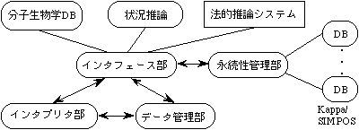

（１１）知識表現言語：Ｑｕｉｘｏｔｅ
マ シ ン：Multi-PSI
環 境：PIMOS
言 語：ESP, KL1
ソース量：3 MB
文 書：マニュアル (日本語)
概要
知識表現、推論などの知識情報処理の基本機能を提供する言語処理系である。
構成

機能
データベースや自然言語処理などの広範な応用を対象とした共通の知識表現・
推論機能、統合型知識ベース管理システム構築のための機能を提供するもので
あり、知識情報処理システム構築のための実験環境を提供する。 論理型言語・
演繹データベースの拡張として、オブジェクト指向概念、制約、モジュール階
層を導入した、演繹オブジェクト指向データベース言語であり、以下の特徴を
持つ。
- 拡張項によるオブジェクト識別性の導入
- オブジェクト間の上位−下位関係に関する包摂制約
- オブジェクト識別性、包摂制約に基づくオブジェクトの属性継承とその例
外の処理
- モジュール概念の導入による、知識ベースの階層化
- 知識ベース定義への追加条件を伴う問い合わせの導入
ＦＴＰ
- 知識表現言語：Ｑｕｉｘｏｔｅ [1,447K]

www-admin@icot.or.jp